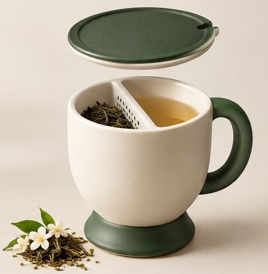

01 / DEMOGRAPHICS
n = 100 Perancangan dan Pengembangan Produk 2026
PERANCANGAN DAN PENGEMBANGAN PRODUK · RINGKASAN PENELITIAN
A more thoughtful
ritual for tea time.
TEA TIME Ceramic Tea Infuser Mug menggabungkan pengalaman menyeduh loose-leaf tea dengan bentuk keramik yang hangat dan fungsional. Penelitian ini menghubungkan kebutuhan pengguna dengan arah pengembangan produk.
01PRODUCT CONCEPTUSER-CENTERED DESIGN

THE CERAMIC TEA INFUSER MUGCONCEPT COLLECTION / 04 COLORWAYS
STUDY SNAPSHOT100respons valid
ATTRIBUTES REVIEWED11atribut produk
DOMINANT KANO CATEGORYIndifferent6 dari 11 atribut
Memahami apa yang dianggap penting, apa yang perlu diprioritaskan, dan apa yang masih perlu diuji.
THE OBJECT
Product profile
Dirancang untuk menyatukan proses penyeduhan dan pengalaman menikmati teh dalam satu objek sehari-hari.

01 / 04TEA TIME · CERAMIC COLLECTION
Warm Ivory & Forest Green
Badan ivory yang hangat dipadukan dengan aksen forest green yang tenang.
Design concept
Mug keramik dengan badan membulat, handle samping, tutup, separator internal untuk loose-leaf tea, dan pedestal base. Proporsi dan detail visual mengikuti render konsep yang dikembangkan.
MATERIALCeramic
FORMRounded body
INFUSIONBuilt-in separator
FINISH DIRECTIONMatte / satin-matte
Design concept
Dimensi, kapasitas, berat, dan parameter keamanan teknis belum ditetapkan pada tahap konsep ini.
PRODUCT SPECIFICATIONS
Form follows
the ritual.
Karakteristik desain yang menjadi acuan pengembangan, bukan spesifikasi final yang telah diuji.
01Material
Badan, handle, dan tutup menggunakan keramik sesuai konsep.
02Form & ergonomics
Siluet membulat dengan handle samping yang relatif tebal dan membulat.
03Infusion system
Separator internal dirancang untuk menahan ampas teh agar tidak mudah terminum.
04Finish & color
Empat kombinasi warna dengan arah finishing matte atau satin-matte.
05Functional features
Tutup keramik dan pedestal-style base menjadi bagian dari bahasa bentuk produk.
06Product dimensions
Ukuran, kapasitas, dan berat perlu ditentukan serta diverifikasi pada tahap pengembangan berikutnya.
WHO TOOK PART
Respondent profile
Komposisi responden memberi konteks dalam membaca hasil evaluasi atribut produk.
RESPONDEN100100 timestamp unik
JENIS KELAMIN2 kategori38 laki-laki · 62 perempuan
RENTANG USIA17–65 tahun5 kelompok usia
KELOMPOK PENGGUNA12 labelSesuai isian responden
02 / AGE DISTRIBUTION
n = 100Kelompok usia
03 / USER GROUPS
label asli · disusun menurut frekuensiKelompok pengguna
Mahasiswa merupakan kelompok yang paling banyak tercatat. Label kategori dipertahankan berdasarkan isian, termasuk variasi penulisan dan jawaban yang belum terdefinisi.
ATTRIBUTE EVALUATION
Kano analysis
Klasifikasi Kano membantu membedakan atribut yang berpotensi meningkatkan kepuasan, berkinerja proporsional, atau belum menjadi pembeda utama bagi responden.
CATEGORY DISTRIBUTION
11 atributHasil klasifikasi atribut
KEY FINDING
6 / 11
atribut berada pada kategori Indifferent
Kategori dominan pada ringkasan Kano adalah Indifferent. Namun, beberapa atribut seperti kemudahan dibersihkan, stabilitas, dan minim risiko tumpah diklasifikasikan sebagai One-dimensional.
View development priorities →ATTRIBUTE-BY-ATTRIBUTE
Ringkasan klasifikasi
| Atribut | Kategori | A | O | M | I | R | Q | Better | Worse |
|---|
Jumlah kategori dan nilai Better/Worse mengikuti worksheet Ringkasan_Kano. Denominator indikator Better/Worse pada workbook adalah A + O + M + I; kategori R dan Q tidak masuk denominator tersebut.
INTERACTIVE VIEW
Attribute explorer
Pilih satu atribut untuk meninjau klasifikasi, indikator Better/Worse, serta implikasi desain yang dapat dipertimbangkan.
FROM INSIGHT TO ACTION
Priority matrix
Urutan awal pengembangan ditinjau dari ranking atribut pada workbook dan nilai Better/Worse. Prioritas ini menjadi alat bantu interpretasi, bukan skor baru.
BETTER / WORSE INDICATORS
hover / tap titikPotensi kepuasan dan ketidakpuasan
← Lower BetterBetter index →
Better menunjukkan potensi peningkatan kepuasan ketika atribut terpenuhi. Worse bernilai negatif dan menggambarkan potensi ketidakpuasan saat atribut tidak terpenuhi. Keduanya bukan pengukuran kepuasan aktual.
WORKBOOK RANKING
Atribut dengan ranking teratas
DESIGN DIRECTION
Design recommendations
Rekomendasi berikut menghubungkan hasil klasifikasi dengan aspek desain yang dapat dievaluasi lebih lanjut.
Mulai dari fungsi yang membentuk pengalaman harian.
Kemudahan dibersihkan, stabilitas saat diletakkan, dan pengurangan risiko tumpah termasuk kategori One-dimensional dalam ringkasan Kano. Atribut ini layak menjadi fokus evaluasi prototipe karena klasifikasinya menunjukkan respons yang cenderung berubah searah dengan pemenuhan atribut.
Validasi kenyamanan genggaman
Evaluasi lebar dan bentuk handle melalui uji genggam dengan pengguna. Kenyamanan genggaman berada pada kategori Indifferent di ringkasan, sehingga rancangan ergonomi perlu diuji alih-alih dianggap sudah memadai.
PERLU PENGUJIAN PENGGUNATetapkan parameter teknis
Tentukan dimensi, kapasitas, berat kosong, serta persyaratan keamanan bahan. Atribut keramik food-grade dan microwave diklasifikasikan Attractive; klaim keamanan tetap membutuhkan verifikasi teknis yang sesuai.
SPESIFIKASI & VERIFIKASIUji sistem infuser dan perawatan
Uji kemampuan separator menahan ampas, kemudahan membersihkan bagian internal, serta interaksi tutup dan mug dalam skenario penggunaan nyata.
UJI PROTOTIPEPerlakukan warna sebagai eksplorasi visual
Variasi warna merupakan bagian identitas konsep, tetapi klasifikasi atribut pilihan warna adalah Indifferent. Preferensi warna tidak disimpulkan dari demografi; diperlukan pertanyaan preferensi yang terukur.
VALIDASI PREFERENSITemuan, interpretasi, dan rekomendasi dipisahkan.
Kategori Kano dan ranking berasal dari ringkasan penelitian. Saran pengujian merupakan interpretasi pengembangan produk dan belum menjadi bukti bahwa desain tertentu meningkatkan kepuasan.
TRANSPARENCY
Data & methodology
Ringkasan sumber dan aturan pembacaan data yang digunakan untuk menyajikan profil responden dan analisis Kano.
Sumber data
Workbook penelitian Tea Infuser Mug_KANO dengan worksheet Form Responses 1, Numbering, Sheet1, Matriks_Kano, Hasil_Kano, dan Ringkasan_Kano.
Profil responden
Worksheet Form Responses 1 memuat 100 baris respons. Timestamp tercatat unik dan tidak ditemukan baris respons yang identik sepenuhnya. Kolom usia, jenis kelamin, dan kelompok pengguna masing-masing memiliki 100 isian.
Klasifikasi atribut
Ringkasan klasifikasi dan nilai Better/Worse menggunakan worksheet Ringkasan_Kano. Kategori Kano ditampilkan sesuai hasil yang tercantum pada worksheet tersebut.
Interpretasi indikator
Better dan Worse menggunakan denominator A + O + M + I sesuai angka workbook. Nilai Worse dipertahankan sebagai nilai negatif. Indikator tersebut bukan pengukuran langsung kepuasan aktual.
Kualitas data & catatan
Data demografi yang ditampilkan tidak memiliki sel kosong. Terdapat satu respons kosong pada pertanyaan dimensi produk; karena itu, jumlah respons valid dapat berbeda menurut atribut. Label kelompok pengguna bervariasi dan dipertahankan sesuai isian, sehingga kategori yang serupa secara makna belum digabungkan.
Batas interpretasi
Hasil mencerminkan respons dalam workbook dan tidak otomatis mewakili seluruh calon pengguna. Dimensi, kapasitas, berat, keamanan material, dan performa produk belum dinyatakan sebagai hasil pengujian teknis.
WORKSHEET INVENTORY
Struktur workbook
Form Responses 1 101 × 27Numbering 101 × 27Sheet1 102 × 22Matriks_Kano 7 × 7Hasil_Kano 102 × 13Ringkasan_Kano 13 × 15